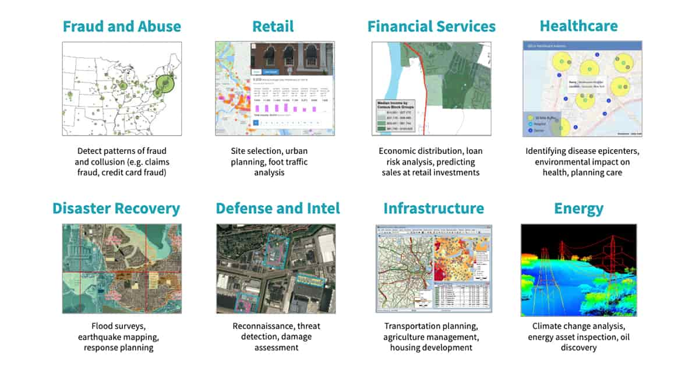
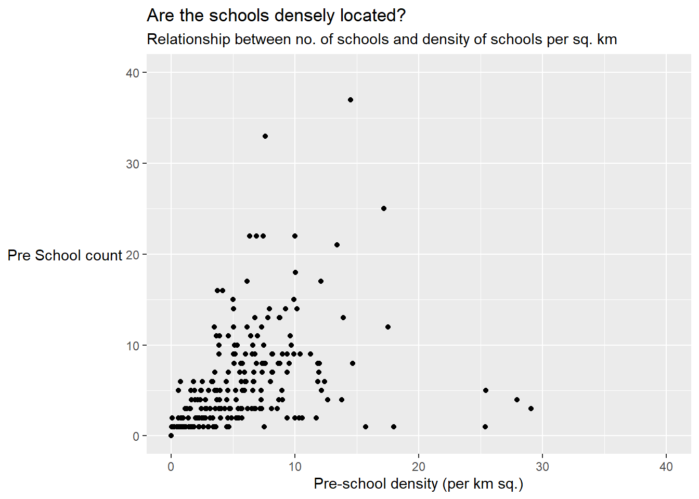

pacman::p_load(sf, tidyverse, tmap)Geospatial Data Wrangling
1. Introduction
Geospatial data analytics lets the eye recognize patterns like distance, proximity, contiguity and affiliation that are hidden in massive datasets. The visualization of spatial data also makes it easier to see how things are changing over time and where the change is most pronounced.
Benefits of geospatial analytics include:
Engaging insights — Seeing data in the context of a visual map makes it easier to understand how events are unfolding and how to react to those events.
Better foresight — Seeing how spatial conditions are changing in real time can help an organization better prepare for change and determine future action.
Targeted solutions — Seeing location-based data helps organizations understand why some locations and countries, such as the United States, are more successful for business than others.
Geospatial analytics has quite a lot of use cases in various industries as shown in the below figure

2. Glimpse of Steps
Some of the important steps performed in this exercise are as follows
installing and loading sf and tidyverse packages into R environment
importing geospatial data by using appropriate functions of sf package
importing aspatial data by using appropriate function of readr package
exploring the content of simple feature data frame by using appropriate Base R and sf functions
assigning or transforming coordinate systems by using using appropriate sf functions
converting an aspatial data into a sf data frame by using appropriate function of sf package
performing geoprocessing tasks by using appropriate functions of sf package
performing data wrangling tasks by using appropriate functions of dplyr package and performing Exploratory Data Analysis (EDA) by using appropriate functions from ggplot2 package
3. Data
Following data sets are used:
MP14_SUBZONE_WEB_PL - Master Plan 2014 Subzone Boundary (Web)
pre-schools-location-kml - Pre-Schools Location
CyclingPath files
listings.csv - Latest version of Singapore Airbnb listing data
4. Deep Dive into Geospatial Analytics
4.1 Installing and loading the required libraries
Major packages used are
sf - for importing, managing, and processing geospatial data
tidyverse - for performing data science tasks such as importing, wrangling and visualising data.
Tidyverse consists of a family of R packages. Following packages are used
readr for importing csv data,
readxl for importing Excel worksheet,
tidyr for manipulating data,
dplyr for transforming data,
ggplot2 for visualising data
p_loadfunction pf pacman package is used to install and load sf ,tidyverse and tmap packages into R environment.
4.2. Importing Geospatial Data
4.2.1 Importing polygon feature data in shapefile format
The code chunk below uses st_read() function of sf package to import MP14_SUBZONE_WEB_PL shapefile into R as a polygon feature data frame.
Two arguments are used :
dsn - destination : to define the data path
layer - to provide the shapefile name
mpsz = st_read(dsn = "data/geospatial",
layer = "MP14_SUBZONE_WEB_PL")Reading layer `MP14_SUBZONE_WEB_PL' from data source
`D:\raveenaclr\Geospatial Analytics\Hands-on_Ex\data\geospatial'
using driver `ESRI Shapefile'
Simple feature collection with 323 features and 15 fields
Geometry type: MULTIPOLYGON
Dimension: XY
Bounding box: xmin: 2667.538 ymin: 15748.72 xmax: 56396.44 ymax: 50256.33
Projected CRS: SVY214.2.2 Importing polyline feature data in shapefile form
The code chunk below uses st_read() function of sf package to import CyclingPath shapefile into R as line feature data frame.
cyclingpath = st_read(dsn ="data/geospatial",
layer = "CyclingPath")Reading layer `CyclingPath' from data source
`D:\raveenaclr\Geospatial Analytics\Hands-on_Ex\data\geospatial'
using driver `ESRI Shapefile'
Simple feature collection with 1625 features and 2 fields
Geometry type: LINESTRING
Dimension: XY
Bounding box: xmin: 12711.19 ymin: 28711.33 xmax: 42626.09 ymax: 48948.15
Projected CRS: SVY21The message above reveals that there are a total of 1625 features and 2 fields in CyclingPath linestring feature data frame and it is in svy21 projected coordinates system too.
4.2.3 Importing GIS data in kml format
The code chunk below will be used to import the kml into R. Unlike previous iports, here complete path and the kml file extension are provided.
preschool = st_read("data/geospatial/pre-schools-location-kml.kml")Reading layer `PRESCHOOLS_LOCATION' from data source
`D:\raveenaclr\Geospatial Analytics\Hands-on_Ex\data\geospatial\pre-schools-location-kml.kml'
using driver `KML'
Simple feature collection with 1359 features and 2 fields
Geometry type: POINT
Dimension: XYZ
Bounding box: xmin: 103.6824 ymin: 1.248403 xmax: 103.9897 ymax: 1.462134
z_range: zmin: 0 zmax: 0
Geodetic CRS: WGS 84The message above reveals that preschool is a point feature data frame. There are a total of 1359 features and 2 fields. Different from the previous two simple feature data frame, preschool is in wgs84 coordinates system.
4.3 Checking the Content of A Simple Feature Data Frame
In this sub-section, let us see what are the different ways to retrieve information related to the content of a simple feature data frame.
4.3.1 Using st_geometry()
One of the the most common way is to use st_geometry() as shown in the code chunk below.
st_geometry(mpsz)Geometry set for 323 features
Geometry type: MULTIPOLYGON
Dimension: XY
Bounding box: xmin: 2667.538 ymin: 15748.72 xmax: 56396.44 ymax: 50256.33
Projected CRS: SVY21
First 5 geometries:MULTIPOLYGON (((31495.56 30140.01, 31980.96 296...MULTIPOLYGON (((29092.28 30021.89, 29119.64 300...MULTIPOLYGON (((29932.33 29879.12, 29947.32 298...MULTIPOLYGON (((27131.28 30059.73, 27088.33 297...MULTIPOLYGON (((26451.03 30396.46, 26440.47 303...The result only displays basic information of the feature class such as type of geometry, the geographic extent of the features and the coordinate system of the data.
4.3.2 Using glimpse()
Let us use glimpse() to learn more about the associated attribute information in the data frame.
glimpse(mpsz)Rows: 323
Columns: 16
$ OBJECTID <int> 1, 2, 3, 4, 5, 6, 7, 8, 9, 10, 11, 12, 13, 14, 15, 16, 17, …
$ SUBZONE_NO <int> 1, 1, 3, 8, 3, 7, 9, 2, 13, 7, 12, 6, 1, 5, 1, 1, 3, 2, 2, …
$ SUBZONE_N <chr> "MARINA SOUTH", "PEARL'S HILL", "BOAT QUAY", "HENDERSON HIL…
$ SUBZONE_C <chr> "MSSZ01", "OTSZ01", "SRSZ03", "BMSZ08", "BMSZ03", "BMSZ07",…
$ CA_IND <chr> "Y", "Y", "Y", "N", "N", "N", "N", "Y", "N", "N", "N", "N",…
$ PLN_AREA_N <chr> "MARINA SOUTH", "OUTRAM", "SINGAPORE RIVER", "BUKIT MERAH",…
$ PLN_AREA_C <chr> "MS", "OT", "SR", "BM", "BM", "BM", "BM", "SR", "QT", "QT",…
$ REGION_N <chr> "CENTRAL REGION", "CENTRAL REGION", "CENTRAL REGION", "CENT…
$ REGION_C <chr> "CR", "CR", "CR", "CR", "CR", "CR", "CR", "CR", "CR", "CR",…
$ INC_CRC <chr> "5ED7EB253F99252E", "8C7149B9EB32EEFC", "C35FEFF02B13E0E5",…
$ FMEL_UPD_D <date> 2014-12-05, 2014-12-05, 2014-12-05, 2014-12-05, 2014-12-05…
$ X_ADDR <dbl> 31595.84, 28679.06, 29654.96, 26782.83, 26201.96, 25358.82,…
$ Y_ADDR <dbl> 29220.19, 29782.05, 29974.66, 29933.77, 30005.70, 29991.38,…
$ SHAPE_Leng <dbl> 5267.381, 3506.107, 1740.926, 3313.625, 2825.594, 4428.913,…
$ SHAPE_Area <dbl> 1630379.27, 559816.25, 160807.50, 595428.89, 387429.44, 103…
$ geometry <MULTIPOLYGON [m]> MULTIPOLYGON (((31495.56 30..., MULTIPOLYGON (…It reveals the data type of each fields.
4.3.3 Using head()
Let us use glimpse() to reveal complete information of a feature object.
head(mpsz, n=5) Simple feature collection with 5 features and 15 fields
Geometry type: MULTIPOLYGON
Dimension: XY
Bounding box: xmin: 25867.68 ymin: 28369.47 xmax: 32362.39 ymax: 30435.54
Projected CRS: SVY21
OBJECTID SUBZONE_NO SUBZONE_N SUBZONE_C CA_IND PLN_AREA_N
1 1 1 MARINA SOUTH MSSZ01 Y MARINA SOUTH
2 2 1 PEARL'S HILL OTSZ01 Y OUTRAM
3 3 3 BOAT QUAY SRSZ03 Y SINGAPORE RIVER
4 4 8 HENDERSON HILL BMSZ08 N BUKIT MERAH
5 5 3 REDHILL BMSZ03 N BUKIT MERAH
PLN_AREA_C REGION_N REGION_C INC_CRC FMEL_UPD_D X_ADDR
1 MS CENTRAL REGION CR 5ED7EB253F99252E 2014-12-05 31595.84
2 OT CENTRAL REGION CR 8C7149B9EB32EEFC 2014-12-05 28679.06
3 SR CENTRAL REGION CR C35FEFF02B13E0E5 2014-12-05 29654.96
4 BM CENTRAL REGION CR 3775D82C5DDBEFBD 2014-12-05 26782.83
5 BM CENTRAL REGION CR 85D9ABEF0A40678F 2014-12-05 26201.96
Y_ADDR SHAPE_Leng SHAPE_Area geometry
1 29220.19 5267.381 1630379.3 MULTIPOLYGON (((31495.56 30...
2 29782.05 3506.107 559816.2 MULTIPOLYGON (((29092.28 30...
3 29974.66 1740.926 160807.5 MULTIPOLYGON (((29932.33 29...
4 29933.77 3313.625 595428.9 MULTIPOLYGON (((27131.28 30...
5 30005.70 2825.594 387429.4 MULTIPOLYGON (((26451.03 30...4.4. Plotting Geospatial Data
Let us use plot() of R Graphic to visualise the geospatial features.
plot(mpsz)Warning: plotting the first 9 out of 15 attributes; use max.plot = 15 to plot
all
The default plot of an sf object is a multi-plot of all attributes, up to a reasonable maximum as shown above.
Plot geometry
Let us now plot only the geometry by using the code chunk below.
plot(st_geometry(mpsz))
Plot palnning area
Similarly, we can also choose the plot the sf object by using a specific attribute as shown in the code chunk below.
plot(mpsz["PLN_AREA_N"])
4.5 Mapping Projection
In this section, let us see how to project a simple feature data frame from one coordinate system to another coordinate system. This process is called projection transformation.
4.5.1 Assigning EPSG code
Let us first check the coordinate system of mpsz simple feature data frame by using st_crs() of sf package as shown in the code chunk below. In order to assign the correct EPSG code to mpsz data frame, st_set_crs() of sf package is used as shown in the code chunk below.
st_crs(mpsz)Coordinate Reference System:
User input: SVY21
wkt:
PROJCRS["SVY21",
BASEGEOGCRS["SVY21[WGS84]",
DATUM["World Geodetic System 1984",
ELLIPSOID["WGS 84",6378137,298.257223563,
LENGTHUNIT["metre",1]],
ID["EPSG",6326]],
PRIMEM["Greenwich",0,
ANGLEUNIT["Degree",0.0174532925199433]]],
CONVERSION["unnamed",
METHOD["Transverse Mercator",
ID["EPSG",9807]],
PARAMETER["Latitude of natural origin",1.36666666666667,
ANGLEUNIT["Degree",0.0174532925199433],
ID["EPSG",8801]],
PARAMETER["Longitude of natural origin",103.833333333333,
ANGLEUNIT["Degree",0.0174532925199433],
ID["EPSG",8802]],
PARAMETER["Scale factor at natural origin",1,
SCALEUNIT["unity",1],
ID["EPSG",8805]],
PARAMETER["False easting",28001.642,
LENGTHUNIT["metre",1],
ID["EPSG",8806]],
PARAMETER["False northing",38744.572,
LENGTHUNIT["metre",1],
ID["EPSG",8807]]],
CS[Cartesian,2],
AXIS["(E)",east,
ORDER[1],
LENGTHUNIT["metre",1,
ID["EPSG",9001]]],
AXIS["(N)",north,
ORDER[2],
LENGTHUNIT["metre",1,
ID["EPSG",9001]]]]mpsz3414 <- st_set_crs(mpsz, 3414)Warning: st_crs<- : replacing crs does not reproject data; use st_transform for
thatst_crs(mpsz3414)Coordinate Reference System:
User input: EPSG:3414
wkt:
PROJCRS["SVY21 / Singapore TM",
BASEGEOGCRS["SVY21",
DATUM["SVY21",
ELLIPSOID["WGS 84",6378137,298.257223563,
LENGTHUNIT["metre",1]]],
PRIMEM["Greenwich",0,
ANGLEUNIT["degree",0.0174532925199433]],
ID["EPSG",4757]],
CONVERSION["Singapore Transverse Mercator",
METHOD["Transverse Mercator",
ID["EPSG",9807]],
PARAMETER["Latitude of natural origin",1.36666666666667,
ANGLEUNIT["degree",0.0174532925199433],
ID["EPSG",8801]],
PARAMETER["Longitude of natural origin",103.833333333333,
ANGLEUNIT["degree",0.0174532925199433],
ID["EPSG",8802]],
PARAMETER["Scale factor at natural origin",1,
SCALEUNIT["unity",1],
ID["EPSG",8805]],
PARAMETER["False easting",28001.642,
LENGTHUNIT["metre",1],
ID["EPSG",8806]],
PARAMETER["False northing",38744.572,
LENGTHUNIT["metre",1],
ID["EPSG",8807]]],
CS[Cartesian,2],
AXIS["northing (N)",north,
ORDER[1],
LENGTHUNIT["metre",1]],
AXIS["easting (E)",east,
ORDER[2],
LENGTHUNIT["metre",1]],
USAGE[
SCOPE["Cadastre, engineering survey, topographic mapping."],
AREA["Singapore - onshore and offshore."],
BBOX[1.13,103.59,1.47,104.07]],
ID["EPSG",3414]]4.5.2 Transforming the projection of preschool from wgs84 to svy21
As we already know that preschool shapefile is in wgs84 coordinate system, st_transform() of sf package should be used instead of st_crs(). This is because we need to reproject preschool from one coordinate system to another coordinate system mathemetically.
preschool3414 <- st_transform(preschool,
crs = 3414)4.6 Importing & Converting an Aspatial Data
In this section, let us see how to import an aspatial data into R environment and save it as a tibble data frame and later convert it into a simple feature data frame. read_csv() of readr package to import listings.csv as shown the code chunk below.
listings <- read_csv("data/aspatial/listings.csv")Rows: 4252 Columns: 16
── Column specification ────────────────────────────────────────────────────────
Delimiter: ","
chr (5): name, host_name, neighbourhood_group, neighbourhood, room_type
dbl (10): id, host_id, latitude, longitude, price, minimum_nights, number_o...
date (1): last_review
ℹ Use `spec()` to retrieve the full column specification for this data.
ℹ Specify the column types or set `show_col_types = FALSE` to quiet this message.4.6.1 Creating simple feature df from aspatial df
The code chunk below converts listings data frame into a simple feature data frame by using st_as_sf() of sf packages
listings_sf <- st_as_sf(listings,
coords = c("longitude", "latitude"),
crs=4326) %>%
st_transform(crs = 3414)Let us now examine the content of this newly created simple feature data frame using glimpse() as shown in the code chunk below
4.7 Geoprocessing with sf package
In this section, you will learn how to perform two commonly used geoprocessing functions, namely buffering and point in polygon count.
4.7.1 Buffering
To determine the extend of the land need to be acquired and their total area,
Firstly, st_buffer() of sf package is used to compute the 5-meter buffers around cycling paths.
This is followed by calculating the area of the buffers as shown in the code chunk below.
Lastly, sum() is used to derive the total land involved.
buffer_cycling <- st_buffer(cyclingpath,
dist=5, nQuadSegs = 30)
buffer_cycling$AREA <- st_area(buffer_cycling)
sum(buffer_cycling$AREA)773143.9 [m^2]4.7.2 Point in polygon count
To determine the numbers of pre-schools in each Planning Subzone,
Firstly, identify pre-schools located inside each Planning Subzone by using st_intersects(). Next, length() is used to calculate numbers of pre-schools that fall inside each planning subzone.
Before proceeding, we can check the summary statistics of the newly derived PreSch Count field by using summary().
To list the planning subzone with the most number of pre-school, the top_n() of dplyr package is used as shown in the code chunk below.
mpsz3414$`PreSch Count`<- lengths(st_intersects(mpsz3414, preschool3414))
summary(mpsz3414$`PreSch Count`) Min. 1st Qu. Median Mean 3rd Qu. Max.
0.000 0.000 2.000 4.207 6.000 37.000 top_n(mpsz3414, 1, `PreSch Count`)Simple feature collection with 1 feature and 16 fields
Geometry type: MULTIPOLYGON
Dimension: XY
Bounding box: xmin: 23449.05 ymin: 46001.23 xmax: 25594.22 ymax: 47996.47
Projected CRS: SVY21 / Singapore TM
OBJECTID SUBZONE_NO SUBZONE_N SUBZONE_C CA_IND PLN_AREA_N PLN_AREA_C
1 290 3 WOODLANDS EAST WDSZ03 N WOODLANDS WD
REGION_N REGION_C INC_CRC FMEL_UPD_D X_ADDR Y_ADDR
1 NORTH REGION NR C90769E43EE6B0F2 2014-12-05 24506.64 46991.63
SHAPE_Leng SHAPE_Area geometry PreSch Count
1 6603.608 2553464 MULTIPOLYGON (((24786.75 46... 374.7.3 Computing Density of preschool by Planning Subzone
To calculate the density of pre-school by planning subzone,
Firstly, let us use st_area() of sf package to derive the area of each planning subzone.
Next, mutate() of dplyr package is used to compute the density by using the code chunk below.
mpsz3414$Area <- mpsz3414 %>%
st_area()
mpsz3414 <- mpsz3414 %>%
mutate(`PreSch Density` = `PreSch Count`/Area * 1000000)4.8 Exploratory Data Analysis
In this section, let us see how to use appropriate ggplot2 functions to create functional and insightful statistical graphs for EDA purposes.
4.8.1 How the preschool density is distributed?
Firstly, let us plot a histogram to reveal the distribution of PreSch Density using hist() as shown in the code chunk below.
hist(mpsz3414$`PreSch Density`)
This function has limitation for customization despite ease of use
In the code chunk below, appropriate ggplot2 functions will be used which is layered set of graphics
ggplot(data=mpsz3414,
aes(x= as.numeric(`PreSch Density`)))+
geom_histogram(bins=20,
color="black",
fill="light blue") +
labs(title = "Are pre-school even distributed in Singapore?",
subtitle= "There are many planning sub-zones with a single pre-school, on the other hand, \nthere are two planning sub-zones with at least 20 pre-schools",
x = "Pre-school density (per km sq)",
y = "Frequency")
4.8.2 What is the relationship between Pre-school Density and Pre-school Count?
Using ggplot2 method, let us plot a scatterplot showing the relationship between Pre-school Density and Pre-school Count.
ggplot(mpsz3414,
aes(x=as.numeric(`PreSch Density`),
y=`PreSch Count`)) +
geom_point()+
coord_cartesian(xlim=c(0,40),
ylim=c(0,40))+
labs(title="Are the schools densely located?",
subtitle = "Relationship between no. of schools and density of schools per sq. km",
x='Pre-school density (per km sq.)',
y= 'Pre School count')+
theme(axis.title.y=element_text(angle=0),
axis.title.y.left = element_text(vjust = 0.5))5. Conclusion & Key Takeaways
In this exercise we have covered the initial steps of importing geospatial data, aspatial data and projection transformation using appropriate R packages. We have also learnt how to view the content of the simple feature data frame using various functions. Finally, we have seen the ways to perform Exploratory Data Analysis (EDA) using ggplot2 functions. Let us see more details in the further sections. Stay tuned…………